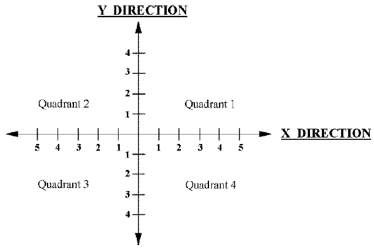

Wafermap Result Display Dimensions
get
This function retrieves the wafer dimensions of the wafermap test result display.
The six values defined in the function represent a two dimensional coordinate system for the dice on a wafer as shown below. The parameters min_x, max_x, min_y and max_y define the range of the X values or Y values. The parameter quadrant (ranging from 1 through 4) defines the direction of increasing values.

The parameter orientation is the angle of the flat wafer side (an angle of 0 means that the flat is at the bottom).
The returned values are only valid if a wafer has been tested, otherwise the results are undefined (for example during package testing).
long GetWaferDimensions(long *min_x, long *max_x, long *min_y,
long *max_y, long *quadrant,
long *orientation);
setThis function sets new dimensions of the wafermap test result display. The meaning of the six values are identical to those described previously for GetWaferDimensions, and as shown above.
The new coordinate system defined with SetWaferDimensions comes into effect with the next display operation.
long SetWaferDimensions(long min_x, long max_x, long min_y,
long max_y, long quadrant, long orientation);